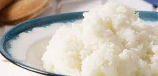

Sadza Recipe

Description
The process of cooking Zimbabwe's most popular staple food
Ingredients
Steps
- Boil the water in a pot
- Create a paste using the mealie-meal in a separate bowl
- Pour the paste in the boiling water while mixing gently with a wooden spoon
- Let it simmer and boil for about 7 minutes
- Add more mealie-meal bit by bit as you mix it into a thicker paste
- Let it simmer at low heat after achieving your prefered thickness
- Yeah! It's ready to serve.